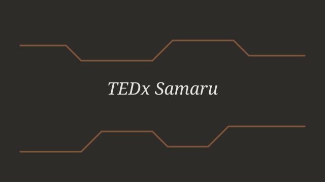
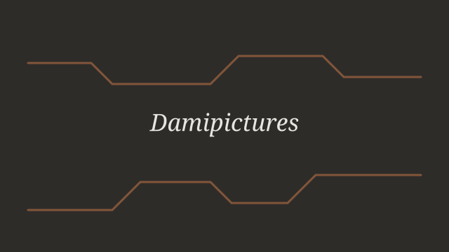
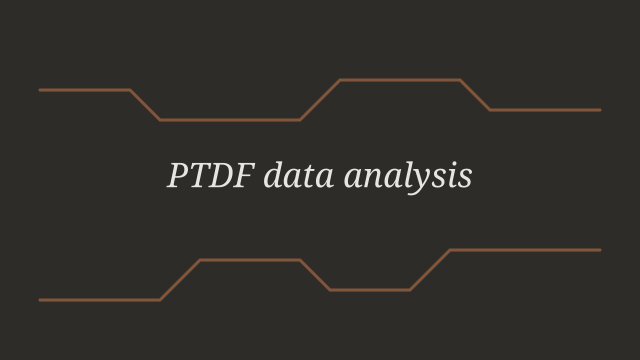
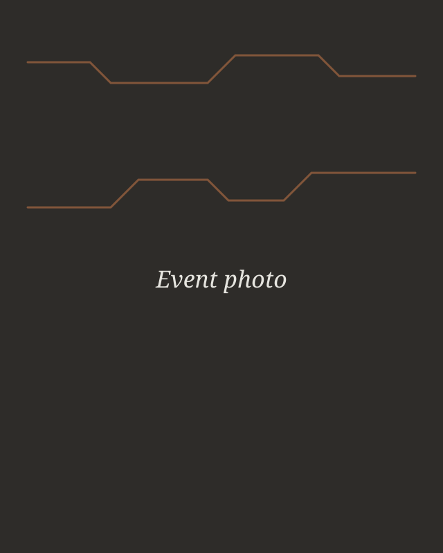
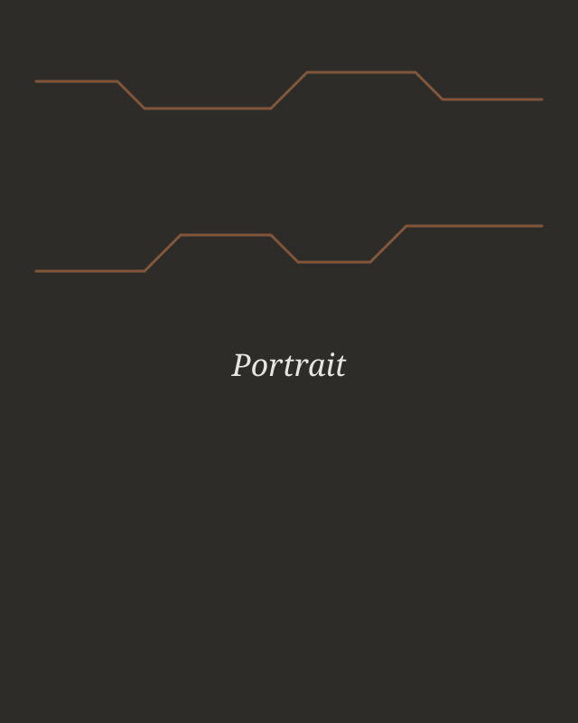
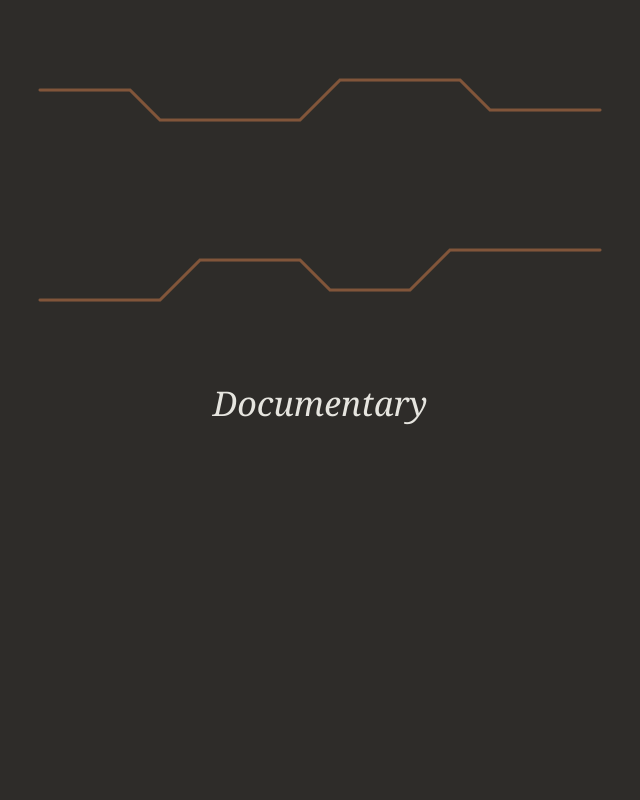

Hey. I’m David,
A Computer& CreativeEngineer
Turning ideas into working systems and strong visuals — IT support, Python and event production that delivers results.
Contact me →- 2+Years volunteering
- 4Projects delivered
- 3Organisations served
- 2027Expected graduation
IT support & troubleshooting
Diagnosing and fixing hardware, software and network problems for people who need it working today.
Python & web builds
Scripts, data summaries and clean static websites like this one.
Event technical production
Sound, projection and lighting planned and run so the show starts on time.
Photography & video
Event, portrait and documentary work that tells the story afterwards.
Worked with
Organisations I have studied at, volunteered for or worked with. Hover a cell for my role.
- TEDx SamaruVolunteer, Head of Technical Unit
- PTDFIntern
- KARFARTVolunteer
- Enactus ABUMember
- Ahmadu Bello UniversityB.Eng student
- DamipicturesLead Photographer
- Rehoboth AcademyAlumnus
- SBRS FuntuaAlumnus
- Python
- C / C++
- HTML5
- CSS3
- JSON
- Git
- Linux
- Windows
- Networking
- Hardware repair
- Photography
- Videography
- Lightroom
- Premiere Pro
- Python
- C / C++
- HTML5
- CSS3
- JSON
- Git
- Linux
- Windows
- Networking
- Hardware repair
- Photography
- Videography
- Lightroom
- Premiere Pro
Building reliable systems & memorable visuals
Hey, I’m David, a final-year Computer Engineering student at Ahmadu Bello University who is as comfortable behind a camera as inside a server rack.
With hands-on experience in Python, IT support, hardware troubleshooting and network support, I like problems where technology has to work for real people on a real deadline. As Head of Technical Unit and Lead Photographer at TEDx Samaru I plan the equipment, run the crew and capture the day; my internship at PTDF added data analysis, reporting and stakeholder communication. Let’s collaborate and make something that works.
More about me →Portfolio
Explore my recent work and see how technical skill, organisation and creativity come together.

TEDx Samaru Technical Production
Led the technical unit for TEDx Samaru events: stage audio, projection, lighting and live photography.
-

Damipictures — Photography Portfolio
An ongoing body of event, portrait and documentary photography published as Damipictures.
2026Creative media -

PTDF Project Evaluation Data Analysis
During my internship at PTDF I collected and cleaned project-evaluation data and used Python to summarise it into charts and tables for stakeholder reports and presentations..
2025Data and reporting -
Personal Portfolio Website
This site: eight responsive pages built with HTML5, CSS Grid/Flexbox and a JSON content model.
2026Web
Through the lens
A few frames from Damipictures. Swipe or scroll sideways — the strip snaps to each photo.

Studio portrait, 2026 
Replace with an event photo 
Replace with a portrait 
Replace with a documentary frame
Let’s work together
Open to internships and graduate roles from January 2027. Email is the fastest way to reach me.
nicedavdami@gmail.com →